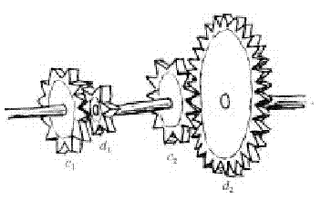
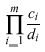

Your little sister got a new mechanical building kit, which includes many cog-wheels of different sizes. She started building gears with different ratios, but soon she noticed that there were some ratios which were quite difficult to realize, and some others she couldn’t realize at all. Since the most intelligent being in your family is your computer (as you have always been claiming), now it has to figure out which ratios are achievable.
There you are! That’s the punishment for bragging about your computer. Now, you must write a program that will do the job: your sister tells you the sizes of the cog-wheels (the numbers of cogs they have) in her kit. Then, she tells you the ratios of the gears she would like to build. Your computer has to decide whether this is possible and, if so, determine how to connect the wheels to obtain the ratio.
Here is an example: let’s assume there are cog-wheels with 6, 12, and 30 cogs. Your sister wants to realize a gear of ratio 4 : 5. One possible solution is the following:

The picture shows a complete gear of ratio 4 : 5. Four wheels are used: c1 with 12 cogs, d1 with 6 cogs, c2 with 12 cogs, and d2 with 30 cogs. Note that d1 and c2 share one axis. In this configuration, if c1 turns once, d2 will make 4/5 of a rotation.
On the other hand, no gear of ratio 1 : 6 can be realized using the cog-wheels your sister has.
The picture above can be written as 12 : 6; 12 : 30. Each transmission is written as c : d,wherecand d denote the number of cogs of the two wheels. A list of transitions c1 : d1 , c2 : d2 , ... , cm:dm means that the second wheel of each transition is on the same axis as the first one of the next transition (di and ci+1 share one axis for 1 $le; i < m).="" for="" those="" of="" you="" who="" are="" not="" good="" at="" mechanics:="" the="" ratio="" realized="" by="" this="" gear="" is="">

The input file contains the descriptions of several sets of cog-wheels, each one followed by a list of ratios to be realized.
A set of cog-wheels is described by one line starting with the number n of sizes of cog-wheels (1 ≤ n ≤ 20). The rest of the line will consist of n numbers a1,...,an, the numbers of cogs on the wheels. There will always be at least 5 and at most 100 cogs per wheel. You may assume that your sister has an infinite supply of wheels of each size.
In your sister’s building kit (and thus, in the input file), the number of cogs on every wheel is divisible by the number of cogs on the smallest wheel in the kit.
The line describing the set of cog-wheels is followed by a list of ratios to be realized. Each ratio to be realized is given by one line containing two numbers aj and bj (1 ≤ aj , bj ≤ 10000; aj != bj ), meaning aj : bj . The line “0 0” marks the end of that list.
At the end of the input file, there will be a line containing only a zero (instead of the number of cog-wheels of the next set).
Output one section for each set of cog-wheels. The sections should start with the line “Set #k” where k is the number of the set.
Then, output the results for the ratios from the test set. Output exactly one line for each ratio. Each of these lines should start with “Ratio aj :bj :”, followed either by “Impossible” if the ratio cannot be realized with the given set of cog-wheels, or a description of a gear which realizes the ratio. This description has to be in the notation described above: a blank-separated list of transitions, each transition having the form “ci:di”.
The gear does not need to be the smallest possible; we guarantee that if there is a solution then there is a solution using at most 10000 transitions. Any solution with at most that many transitions is an acceptable answer.
Every section should be followed by a blank line.
3 6 12 30 4 5 1 6 0 0 0
Set #1 Ratio 4:5: 12:30 12:6 Ratio 1:6: Impossible